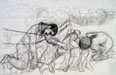
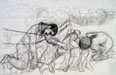

| Introduction |
| The Massacre |
| Witnesses |
| ...Rose Amer |
| ...Abu Ayyoub |
| ...Abu Azmi |
| ...Abu Butros |
| ...Abu Naser |
| ...Political Prisoner |
| ...Abu Sameeh |
| ...Abdal Tamam |
| ...Abu Thiab |
| ...Tawfiq Touby |
| ...Abu Yazen |
| ...Abu Waleed |
| Roster of Victims |
| Artist's Notes |
| Contact me |
| ="pointer-events:none;cursor:default;" href="http://www.art.net/samia">Exit |
MEMORIAL on the 50th Anniversary of the Kafr Qasem Massacre
Witness of Abdalraheem Salim Tah, known as Abu Yazen*
I was seventeen years of age. We were working in the village fields for the Asaf Company. My brother Jamal who is eleven years old came with our neighbor�s nine year old boy, Riyad Raja. They came to informed me that I must go home because there is a serious prohibiting on being out of the house. We were nineteen workers all together and it was ten till five in the afternoon. We were going eastwards toward the village when we heard sound of gunfire. We assumed that the shooting was on the border; we did not imagine that a crime of the magnitude of a massacre was to happen to us.
We saw the truck driven by the martyr Atta Yakoub Sarsour. Abdalrahman Samir Badeir was already in the truck. My brother Jamal was sitting beside me. When we reached Sami�s stone quarry, we noted that the shooting was overhead. We lowered our heads so we would not be hit. When we were stopped, I lifted my head to see a soldier standing on the running board of the vehicle. He looked at us and asked, �Where are you from? Where were you?� He did not wait for answers and commanded, �Get down all of you.� We stood in line facing south. I saw that there were three soldiers. One was carrying a Bryn, one an Ouzi, and the third a shot gut.
The three soldiers distanced themselves while one of them gave the order to the soldier carrying the Bryn saying �Harvest them, lie on the ground.� My brother and I lay down on the ground. My brother Jamal held on to me, while the soldier with the Ouzi began to shoot. One of the soldiers told the one carrying a shot gun �shoot each one of them one or two bullets. I saw that one of the youth who was with us, the martyr Jumma Sayed Sarsour, was hit in his throat and when the soldiers approached him they shot him many more times. His arm went up in the air from the strength of the shots and he was dead.
Another martyr, Abd Saleem who was next to me, yelled �oh fear! My beloved! Oh fear!� The soldiers came and stood over my brother and me. One of them asked, �is he alive?� The other soldiers answered �he is dead.� He kicked my right side with his shoe. I pretended to be dead. My brother Jamal began to talk to me, �They killed you my brother! What have they done to you!� One Israeli Soldier came towards me and shot me four times in the arm. My brother Jamal began to cry over me. The soldier came to him and put his gun to his forehead and shot twice.
Jamal hugged my waist with all his ebbing might and died. My tears poured from my eyes while I pressed my face pressed to the ground. My tear wet the earth. After that they began to shoot all the others again.
The three soldiers thought they had done us all in. Two of them left and the third one who stayed fell asleep for ten minutes. I saw a car carrying young women. The soldiers stopped the vehicle and after a while they forced all the women to get out. They shot them all. After that I heard the voice of the martyred Muhammad Saleem Khader screaming calling �Oh come! They have killed me! They shot me!� An Israeli soldier came to him saying, �Why do you scream you dog!� He shot him and I did not hear any more screaming.
Near me there was the martyred Salim Basheer who was hit and calling, �Oh my children! Oh my loved ones!� until he died alone untended. The three Israeli soldiers headed east and left him.
I heard the voice of the martyred Mahmoud Khader talking with one of the Israeli soldiers as the soldiers was shooting him. Then he rained shots on us in two more attacks. In the first one, Mahmoud Khader Sarsour was martyred, while in the second one, Yousef Muhammad Isma�il Sarsour was martyred. I then became unconscious and did not wake until an Israeli soldier was dragging me from the one leg of mine that was shot. I saw the various Israeli soldiers as they were dragging the martyred ones � carrying them and throwing them. In the morning of the next day, I saw Uthman Al Kadourah from Jaljoulia. He said to me �They told me we want you to dig for the army! They are asking us to bury the dead.� An Israeli soldier saw us and yelled, �Shoot him so we can bury him with the others.�
At that moment, I heard the sound of a vehicle coming from the south. They saw me as I was holding the arm that was shot repeatedly. They asked the Israeli Soldiers if there were any wounded. And the Israeli soldiers replied �yes� in a low voice.
They took me to Hasharone Hospital. While in the hospital an Israeli officer came to question me. I told him that I know the soldier who did the shooting very well. I identified the soldier even though they said that I did not know him. He was number seven of eleven. [Abu Yazen is referring to the court record.]
Since that broken day when I wish to sleep, I must cover my head even in the hot summer. I feel very strange things. I see the shooting and the killing. I see the bodies and the Israeli soldiers. I see the martyr Ju�ah Tafeek, Imad Hamoudy, Mousa and Atta in my dream. I see them covered with their own blood and their blood emptying from them. They were my best friends. They have all been martyred. May gods have mercy on them�
On each anniversary of the massacre I cannot sleep. I see people trying to kill me.
Web posting and translation: Samia A. Halaby, September 2006.
![[Art on the Net]](/images/artnet_button.gif)